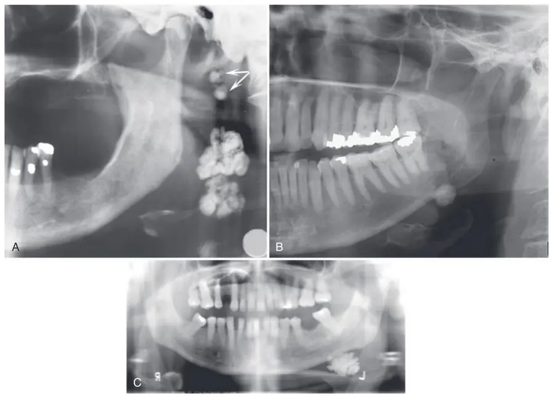
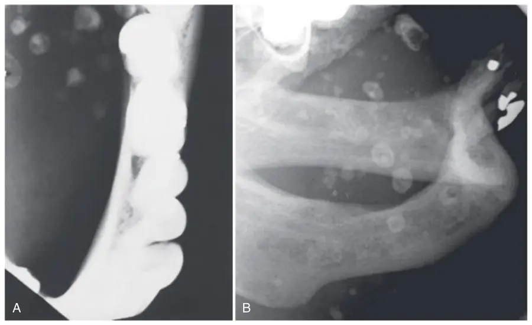

نسخه استخراجشده؛ ترجمه یا تأیید علمی انجام نشده است. وضعیت: captured
غدهی لنفاوی کلسیفیه از یک جایگزینی میآید: «کلسیفیکاسیون دیستروفیک در غدد لنفاوی ملتهب مزمن رخ میدهد، جایی که بافت لنفوئیدی با املاح کلسیم شبههیدروکسیآپاتیت جایگزین میشود و معماری گره را محو میکند.»

و معنایش: «حضور کلسیفیکاسیون در غدد لنفاوی به معنای بیماری فعال یا بیماریای که از آن پس فروکش کرده است.»
و فهرست علتها: بیماریهای گرانولوماتوز مانند سل (اسکروفولا یا لنفادنیت گردنی سلی)، سارکوئیدوز، بیماری خراش گربه، واکسیناسیون ب.ث.ژ، و نیز آرتریت روماتوئید و اسکلروز سیستمیک، لنفومی که پیشتر با پرتودرمانی درمان شده، عفونتهای قارچی، و بدخیمی، از جمله متاستاز از نئوپلاسمهای کلسیفیکنندهی دوردست — بهویژه کارسینوم پاپیلاری متاستاتیک تیروئید.
و محلشان: «شایعترین گرههای درگیر در زنجیرههای سابمندیبولار و گردنی سطحی و عمقیاند. کمتر، گرههای پیشگوشی و سابمنتال درگیر میشوند.» و در ناحیهی سابمندیبولار، «گرهها میتوانند در سطح مرز تحتانی مندیبل یا پایینتر از آن نزدیک زاویه باشند، جایی که گاهی روی بخش تحتانی راموس سوپرایمپوز میشوند».
و پدیدهی زنجیره شدن: «کلسیفیکاسیون غدد لنفاوی میتواند یک گره یا یک ردیف خطی از گرهها را در بر بگیرد — پدیدهای که به نام «زنجیره شدن» شناخته میشود و معمولاً در اسکروفولا دیده میشود.»
و مهمترین ویژگی افتراقی این درس: «محیط خوشمرز و معمولاً نامنظم است. گاهی گره کلسیفیه ظاهری گلکلمی و لوبوله دارد. این نامنظمی شکل، اهمیت بسیار زیادی در تفکیک کلسیفیکاسیون گره از دیگر کلسیفیکاسیونهای بافت نرم این ناحیه دارد.»
و ساختار داخلی: «میتواند در درجهی رادیواوپسیته متغیر باشد و تصور مجموعهای از تودههای کوچکتر، کروی یا نامنظم بسازد. گاهی گره کلسیفیه ظاهری لاملار دارد، یا رادیواوپسیته تنها روی سطح گره دیده میشود — که این ظاهر اخیر کلسیفیکاسیون پوستهتخممرغی نامیده شده است.»
و یک محدودیت صادقانه: «الگوی کلسیفیکاسیون گره بهطور قابلاعتمادی میان بیماری خوشخیم و بدخیم تفکیک نمیکند.»
و افتراق از سنگ بزاقی: «تفکیک میان یک غدهی لنفاوی کلسیفیهی منفرد و سنگ بزاقی در ناحیهی هیلوم غدهی سابمندیبولار میتواند دشوار باشد، چون هر دو میتوانند نزدیک یا مجاور کورتکس تحتانی مندیبل درست جلوی زاویه دیده شوند.
معمولاً سنگ بزاقی خطنمای صافی دارد، در حالی که غدهی لنفاوی کلسیفیه معمولاً نامنظم و گاهی لوبوله است.» و تفکیک با علائم مرتبط با غدهی بزاقی یا در صورت لزوم با سیالوگرافی ممکن میشود. و آسپیراسیون سوزنی ظریف ابزاری ساده، مقرونبهصرفه، حساس و اختصاصی برای تشخیص اسکروفولاست.
و حالا تونسیلولیت — سنگ لوزه: «وقتی دورههای مکرر التهاب، کریپتهای لوزه را بزرگ میکنند. برطرف نشدن کامل دبری آلی — مانند بیوفیلم باکتریایی و چرک، سلولهای اپیتلیال و غذا — میتواند هستهی کلسیفیکاسیون دیستروفیک شود.»
و محلش روی پانورامیک، منشأ اصلی اشتباه است: «تونسیلولیتها به شکل موجودیتهای رادیواوپک منفرد یا متعدد دیده میشوند که روی بخش میانی راموس مندیبل، سطح پشتی زبان، و فضاهای هوایی اوروفارنژیال سوپرایمپوز میشوند. اغلب هم درست پایینتر از کانال مندیبولار روی پانورامیک ظاهر میشوند.» و روی مقاطع محوری CBCT یا MDCT، «در بافتهای نرم داخلی نسبت به راموس و مجاور دیوارهی جانبی فضای هوایی اوروفارنژیال».
و ظاهرشان: «شایعترین ظاهر تونسیلولیتها، خوشهای از موجودیتهای رادیواوپک کوچک، بدمرز و با اندازههای متفاوت است.» و از نظر دانسیته: «اندکی رادیواوپکتر از استخوان اسفنجی و تقریباً همدانسیته با استخوان کورتیکال.»
و افتراقشان و راهحل: «تشخیص افتراقی، یک موجودیت رادیواوپک درون خود راموس است، مانند جزیرهی استخوانی متراکم. در صورت تردید، یک تصویر خلفی-قدامی جمجمه یا مندیبل، یا یک تاون معکوس با دهان باز میتواند نشان دهد که کلسیفیکاسیون مجاور سطح داخلی راموس است.»
و علائم بالینیشان: کلسیفیکاسیونهای کوچک معمولاً بیعلامتاند؛ ولی با بزرگتر شدن، گلودرد، دیسفاژی، اوتالژی، بوی بد دهان و شرمساری اجتماعی بهدلیل ترکیبات گوگردی فرار، یا احساس جسم خارجی هنگام بلع گزارش شدهاند. و «در بیماران سالمند با اختلالات مکانیکی بلع و بیماران ایمنیسرکوبشده، درمان تونسیلولیت بیعلامت هم میتواند در نظر گرفته شود، بهدلیل خطر پنومونی آسپیراسیون». تونسیلولیت در هر سنی میتواند رخ دهد، هرچند در سنین بالاتر شایعتر است.
پیش از فلبولیت، یک دستهبندی را روشن کن: «کلسیفیکاسیون ایدیوپاتیک یا کلسینوز، از رسوب کلسیم در بافت طبیعی ناشی میشود، با وجود سطوح طبیعی کلسیم و فسفات سرم. اینها در سر و گردن نسبتاً شایعاند.» و سنگ بزاقی و فلبولیت در همین دسته میگنجند.

و فلبولیت چیست؟ «ترومبوسهای کلسیفیه، که از راکد ماندن خون در وریدها، ونولها، یا رگهای سینوسوئیدی همانژیومها — بهویژه نوع کاورنوز — پدید میآیند.» و «معدنی شدن ترومبوس از هستهی آن آغاز میشود و از کریستالهای کربنات کلسیم-فلوئوروهیدروکسیآپاتیت ساخته میشود».
و مهمترین جملهی این اسلاید — چیزی که فلبولیت را از یک کنجکاوی به یک هشدار جراحی تبدیل میکند: «فلبولیتها پاتوگنومونیک همانژیوم یا مالفورماسیون عروقی در ناحیهی ماگزیلوفاسیالاند.»
و صریحتر: «اهمیت شناسایی درست فلبولیتها در شناسایی یک همانژیوم یا مالفورماسیون عروقی نهفته است. این نکته حیاتی است اگر اقدامات جراحی در نظر باشد.»
و یک نکتهی زمانی جالب: «در بزرگسال، فلبولیتها میتوانند تنها بازماندهی یک همانژیوم دوران کودکی باشند که مدتهاست پس رفته است.»
و چهار نشانهی بالینی که ماهیت عروقی را تأیید میکنند:
و ظاهر تصویریاش: «در مقطع عرضی، شکل فلبولیت گرد یا بیضی است، و معمولاً تا ۶ میلیمتر قطر با محیطی صاف اندازهگیری میشود. اگر رگ درگیر از پهلو دیده شود، فلبولیت میتواند شبیه یک سوسیس مستقیم یا اندکی خمیده باشد.»
و امضای داخلیاش: «ساختار داخلی ظاهری مختلط رادیولوسنت و رادیواوپک دارد و با لامیناسیونهای متحدالمرکز مشخص میشود، که به فلبولیتها ظاهر چشم گاو یا هدفمانند میدهد.» و «حفرههای جریان رادیولوسنت میتوانند دیده شوند، که ممکن است بخشهای باز باقیماندهی رگ را نشان دهند».
و افتراقشان از سنگ بزاقی — با یک قاعدهی توزیعی: «سنگهای سابمندیبولار معمولاً بهصورت موجودیتهای منفرد رخ میدهند. اگر بیش از یک سنگ حاضر باشد، معمولاً در یک خط جهتگیری شدهاند. در مقابل، فلبولیتها معمولاً متعددند و توزیع تصادفیتر و خوشهای دارند.»
و یک نکتهی افتراقی که در درس پیش هم آمد: فلبولیت میتواند در ناحیهی زاویهی فک شبیه غدهی لنفاوی کلسیفیه دیده شود — «ولی فلبولیتها معمولاً کوچکتر و متعددند، با حلقههای متحدالمرکز رادیواوپک و رادیولوسنت، و شکلشان میتواند مقطع عرضی یک رگ خونی را تقلید کند.»